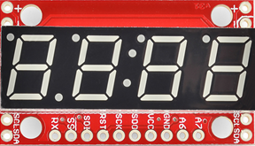

Controlling a 4-Digit 7-Segment Display Using Serial Port
This example shows you how to use the serial UART on Raspberry Pi hardware to control a 4-digit 7-segment display.
Contents
Introduction
Raspberry Pi hardware includes a hardware serial UART port. The serial port enables you to connect devices supporting serial communications directly to Raspberry Pi hardware. There is a wide variety of sensors, displays, ADC's, DAC's, etc. supporting serial communications. By using these devices you can add new capabilities to your Raspberry Pi projects.
In this example, we will concentrate on controlling a 4-digit 7-segment display via serial port. Note that we will be using the same display as in "Controlling a 4-digit 7-Segment Display Using I2C". However, this time around we will be using serial port instead of I2C as the communications interface. We will start by providing an overview of serial communications in general and then focus on the display and specifics of serial communications interface it supports. We will learn about MATLAB command interface for serial communication devices and finally finish the example by displaying numbers and simple characters.
Prerequisites
- We recommend completing Getting Started with MATLAB Support Package for Raspberry Pi Hardware example.
Required Hardware
To run this example you will need the following hardware:
- Raspberry Pi hardware
- A power supply with at least 1A output
- Breadboard and jumper cables
- A 4-digit, 7-segment display with serial interface from SparkFun
Overview of serial communications
The serial port on Raspberry Pi implements a version of the RS-232 communications where 0/+3.3V TTL logic levels are used instead of +/-12V. RS-232 is a series of standards for serial binary single-ended data and control signals connecting between data terminal equipment (DTE) and DCE data circuit-terminating equipment (DCE). RS-232 was once a common peripheral found in personal computers. It has been largely replaced by USB. Today, TTL logic level implementation of RS-232 is commonly used for attaching low-speed peripherals to an embedded system.
Raspberry Pi hardware has a serial port exposed on the 2x13 expansion header. The serial port has two signals. A transmit signal line, TXD, and a receive signal line, RXD. Peripheral devices supporting serial communications are attached to these pins. There are other signal lines such as RTS/CTS but these are rarely used.
The RS-232 communications does not have a clock signal. The clock is derived from the incoming waveform. The transmission starts with a start bit followed by a number of data bits (usually 8) and ends with a stop bit. The data rate is called baud rate and specifies signaling rate in bits per second.
Disable serial console
In the default Raspbian Linux image, the serial port is configured to be used as Linux console input/output. This means that you can't use the serial port to communicate with external devices. In order to use the serial port, you need to disable serial console. Enabling or disabling the serial console requires using the raspi-config utility. To enable / disable serial console using the raspi-config Linux command line utility:
- Open an interactive shell to you Raspberry Pi:
clear rpi
rpi = raspi;
openShell(rpi)
The openShell function is not supported in MATLAB® Online™. Access the command shell remotely via SSH with PuTTY, as described in Remote Access.
- On the Linux command shell that opens, execute the following command:
$ sudo raspi-config
The command above brings up the main menu of the raspi-config utility.
- To enable or disable the serial console, use up and down arrow keys to select the Advanced Options > Serial menu item which brings up a "Yes" or "No" question. To UART pins to communicate with a serial device, choose the "No" option to disable the serial console.
- Go back to the main menu using left and right arrow keys and select "Finish". If the raspi-config utility asks you to reboot, accept it. After your board reboots, the serial pins will be configured properly. Clear the raspi object and re-create it to establish connection with your board.
clear rpi
rpi = raspi;
Overview of 4-digit 7-segment display
The 4-digit 7-segment display from SparkFun is a 4-digit alpha-numeric display with TTL serial, SPI and I2C interfaces.

This device can display numbers, most letters and a few special characters. Decimal points, apostrophes and colons are supported. Brightness of the display can be adjusted. The display has a simple control interface where the master device, Raspberry Pi hardware in this case, issues commands with parameters to the display device over I2C bus. For example, to clear the display master sends a command byte of '0x76'. To set the cursor to a particular position, master sends a command byte of '0x79' followed by a byte indicating cursor position (0 to 3). A comprehensive list of commands is shown in the table below.
| Command | Command byte | Data byte range | Data byte description |
| Clear display | 0x76 | None | |
| Decimal control | 0x77 | 0-63 | 1-bit per decimal |
| Cursor control | 0x79 | 0-3 | 0=left-most, 3=right-most |
| Brightness control | 0x7A | 0-255 | 0=dimmest, 255=brightest |
| Digit 1 control | 0x7B | 0-127 | 1-bit per segment |
| Digit 2 control | 0x7C | 0-127 | 1-bit per segment |
| Digit 3 control | 0x7D | 0-127 | 1-bit per segment |
| Digit 4 control | 0x7E | 0-127 | 1-bit per segment |
| Baud rate config | 0x7F | 0-11 | See baud rate command in datasheet |
| I2C Address configuration | 0x80 | 1-126 | New I2C address |
| Factory reset | 0x81 | None |
Connect the display
To interface the display to Raspberry Pi hardware you need to do some light soldering. Since we are using the serial interface of the display in this example, solder jumper wires to the RX, GND and VCC pins of the display. You may also choose to solder some straight male headers to be able to mount the display on a breadboard for prototyping. Before going any further, you may also want to follow manufacturer's hardware assembly guide.
Follow the circuit diagram shown below to connect the display to Raspberry Pi hardware.
Display a number
Let's start by creating a serialdev object that will allow us to talk to the display using serial communications.
clear rpi; segmentDisp = serialdev(rpi, '/dev/ttyAMA0', 9600);
The second argument, '/dev/ttyAMA0', is the name of the serial port. We open this serial port with a baud rate of 9600 which is the default baud rate supported by the display. According to the command table for the display, sending a byte in the range 0 - 0xf results in a hexadecimal number represented by the byte to be displayed. The cursor is initially at position 0, which is the left most digit, and advances one position each time a character is displayed.
write(segmentDisp, 0);
This should display a '0' on the left most digit of the display. Let's display a couple of more characters.
write(segmentDisp, 7); write(segmentDisp, hex2dec('a')); write(segmentDisp, hex2dec('b'));
After executing the commands above, you should see '07ab' displayed on the segmented display.
Clear display screen
To clear the display screen we will follow the datasheet and send '0x76' to the display.
write(segmentDisp, hex2dec('76'));
Set cursor position
To display a particular character at a particular cursor position, you may want to set the cursor position.
write(segmentDisp, [hex2dec('79'), 2]);
write(segmentDisp, 9);
The commands above will display a '9' at the second digit position of the display.
Advanced: Create a MATLAB class for segment display
You can put all the things we learned about the segment display together and create a MATLAB class for it. This MATLAB class has methods for setting the cursor position, clearing the display screen, printing numbers, etc. As an example, we created such a class. Here is an example of how you would use this class.
clear segmentDisp sd = raspi.internal.serialsegmentdisplay(rpi); clr(sd); % Clear screen print(sd, '112'); print(sd, 'dead'); print(sd, 'beef');
Note that before creating the class, we cleared the original serialdev object called segmentDisp. You are allowed to create a single object per serial device. The segmentdisplay class internally creates a serialdev object. Hence you need to clear any serialdev object connected to the display from MATLAB workspace before instantiating the segmentdisplay.
The segmentdisplay class tries to reduce flickering caused by clearing / re-displaying numbers. It does so by caching the displayed characters and updating only those that are different. Not all features supported by the segmented display are implemented. You can use the MATLAB class we created as a starting point for your own implementation. Here is a MATLAB code snippet implementing an up counter:
N = 1000; delay = 0.01; clr(sd); for i = 1:N print(sd,num2str(i)); pause(delay); end
Summary
This example introduced the workflow for working with serial communications interface. You learned how to control a 4-digit 7-segment display to display hexadecimal numbers.